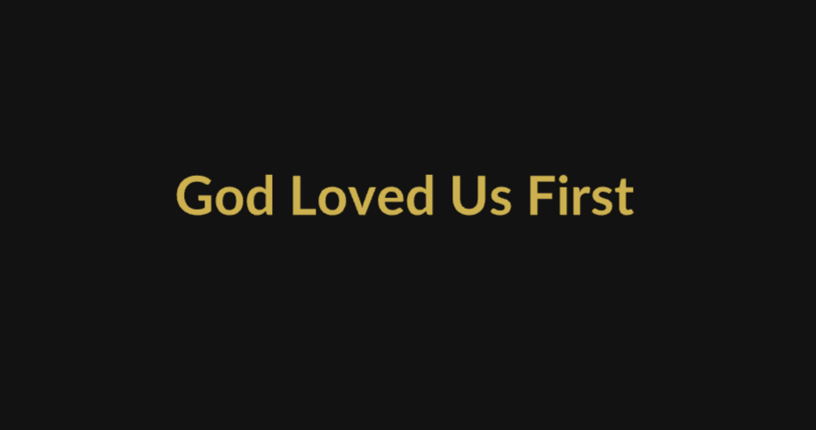
드라마틱 에필로그
신명기 6:4–6
🎵 사운드를 켜고 감상해주세요
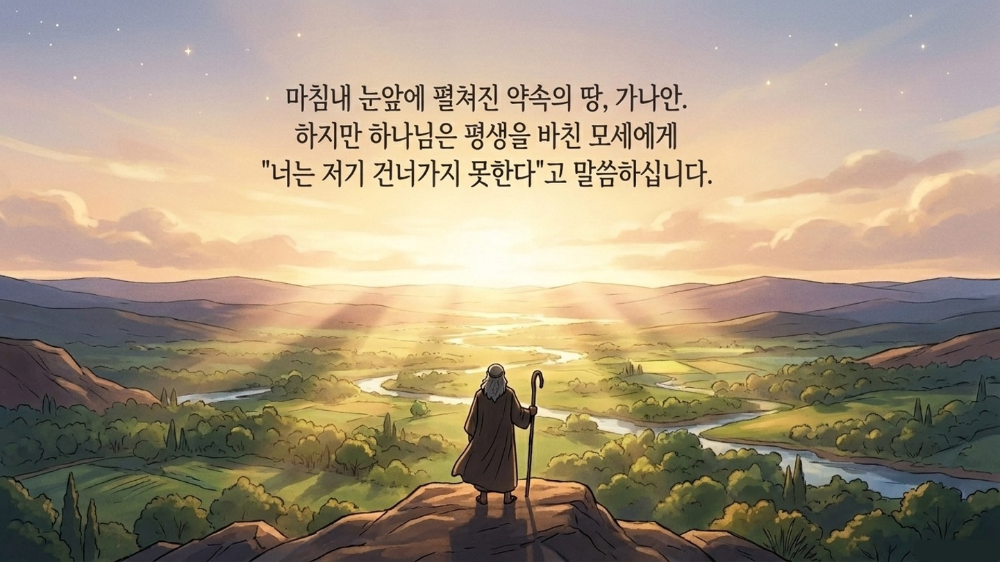
평생 걸어온 광야 길의 끝, 꿈에 그리던 가나안 땅이 바로 눈앞에 있습니다.
하지만 하나님은 말씀하십니다. "너는 저 땅을 바라볼 뿐, 들어가지 못하고 여기서 죽으리라."
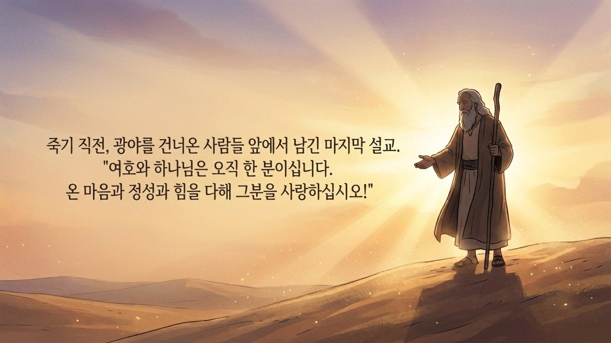
모세는 분노하거나 억울해하지 않고, 가나안으로 들어갈 백성들 앞에서 생애 마지막 외침을 전합니다.
그들이 들어갈 땅은 원하는 것을 얻기 위해 온갖 가짜 신들에게 무릎 꿇어야 하는 타협의 세상이기 때문입니다.
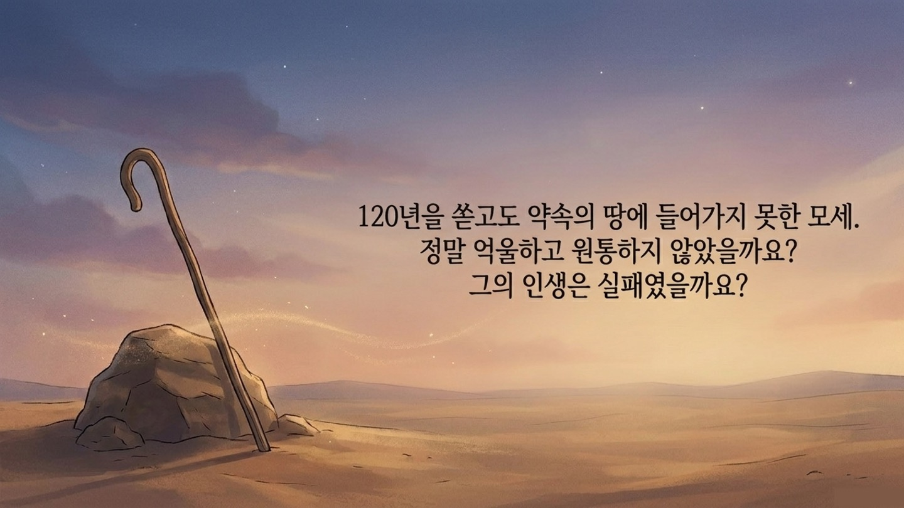
가나안 땅 한번 밟지 못하고 광야에서 죽음을 맞이하는 그였습니다.
하지만 모세는 왜 평생을 바친 자기 인생이 조금도 아깝지 않다고 자신 있게 고백할 수 있었을까요?
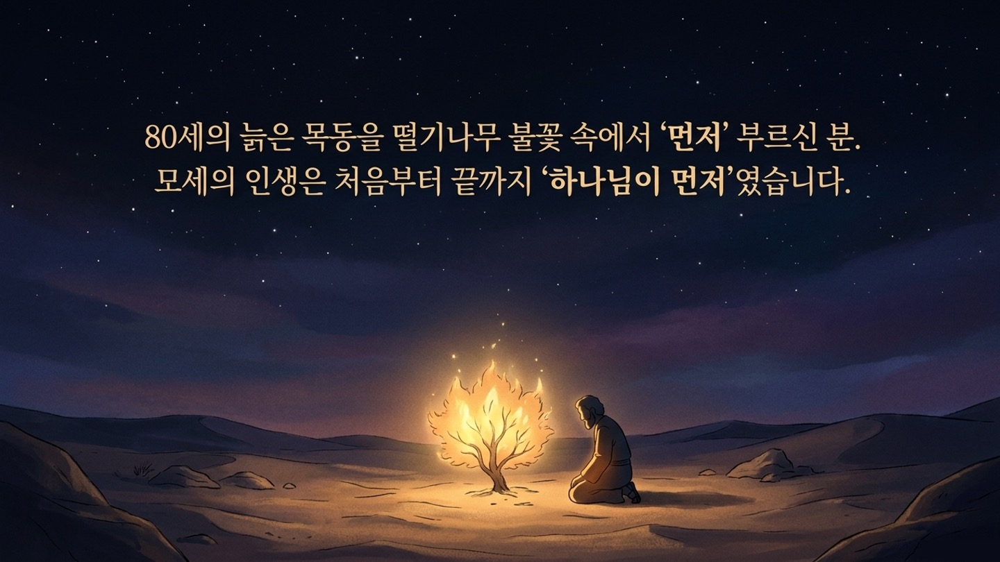
갈대 바구니에 담겨 죽을 뻔했던 아기는 왕궁의 왕자가 되었고, 도망쳐 광야의 목동이 되었다가 80세에 비로소 하나님의 부름을 받아 백성을 이끌게 됩니다.
돌아보면 모세는 단 한 순간도 자신의 힘만으로 걸어온 적이 없었습니다.
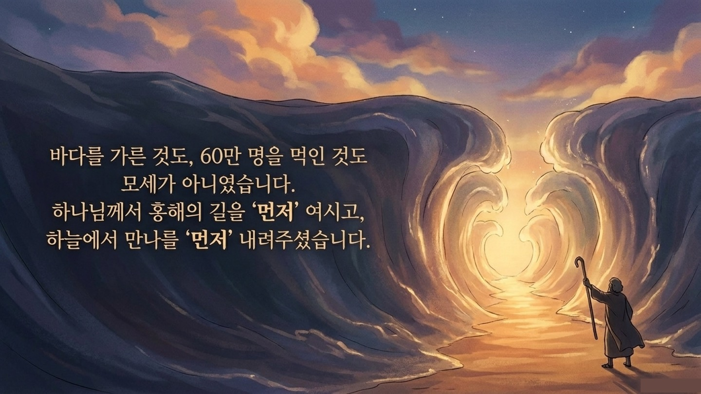
모세에게 진짜 '약속의 땅'은 눈앞의 땅덩어리가 아니었습니다.
자기를 건져내고 이름을 부르시며, 바다를 가르고 매일의 만나로 먼저 채워주신 하나님의 품이었습니다.
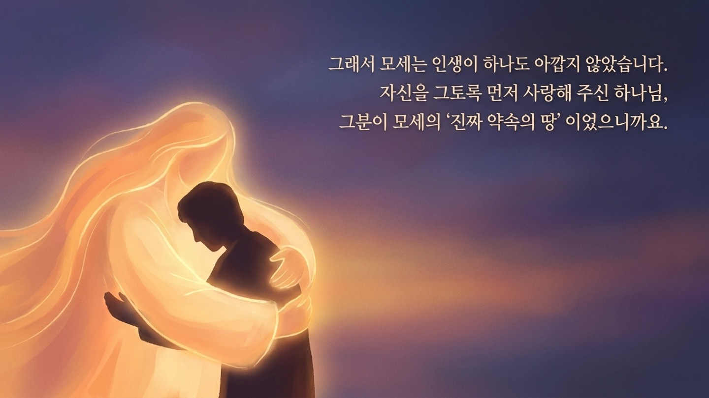
먼저 건져내시고, 먼저 찾아와 이름을 부르시고, 먼저 바다를 가르시며 매일 만나를 내려주셨던 하나님.
그분의 사랑은 우리의 필요나 자격보다 언제나 한 걸음 먼저 찾아왔습니다.
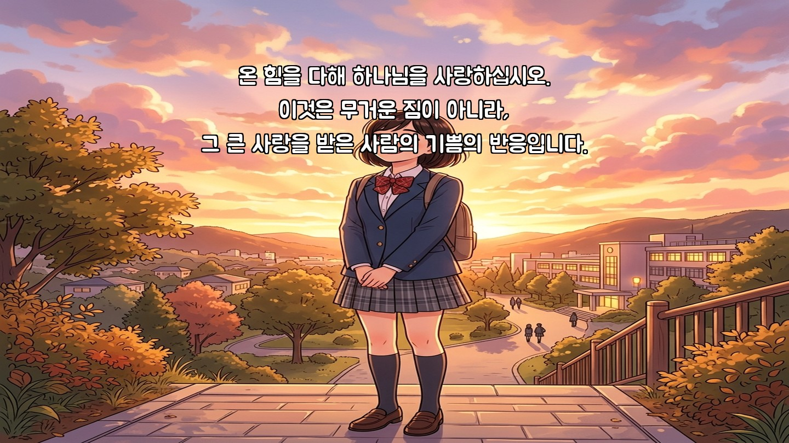
"온 힘을 다해 하나님을 사랑하라."
이것은 종교적인 짐이 아닙니다. 하나님께 넘치도록 사랑받은 사람이 터뜨리는 기쁨의 고백입니다.
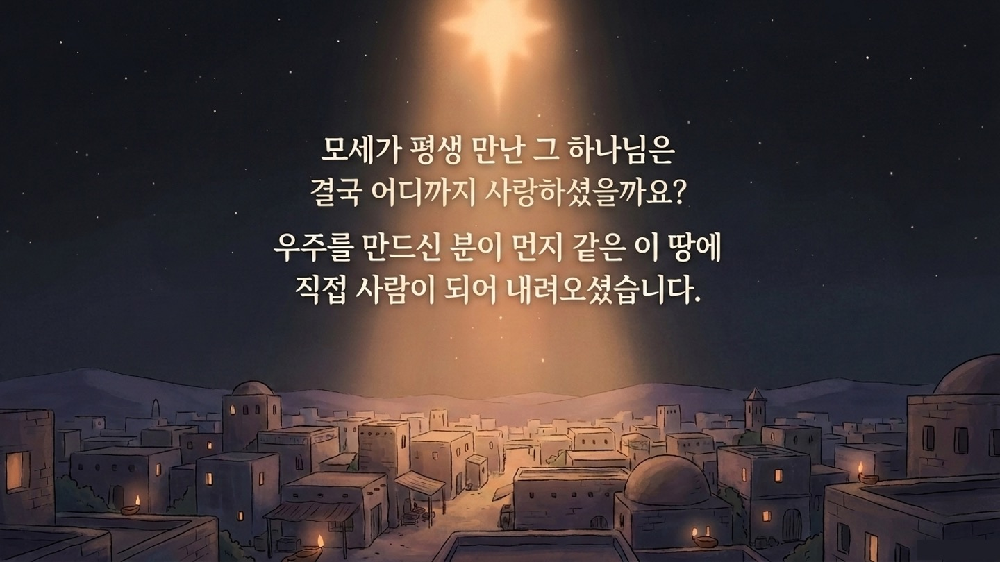
모세는 떨기나무와 홍해, 만나만 보고도 감격했습니다.
하지만 그분이 사랑을 진짜 끝까지 밀고 가셨을 때 펼쳐질 절정은 모세조차 보지 못했습니다.
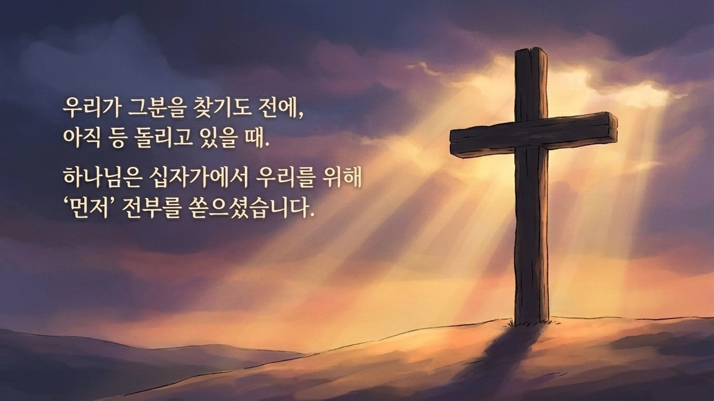
우리가 하나님을 알기도 전에, 먼저 다가와 물과 피를 다 흘리시며 전부를 쏟아부어 주셨습니다.
가장 잔인한 십자가에서 자신의 모든 것을 남김없이 낭비하며 우리를 살려내셨습니다.
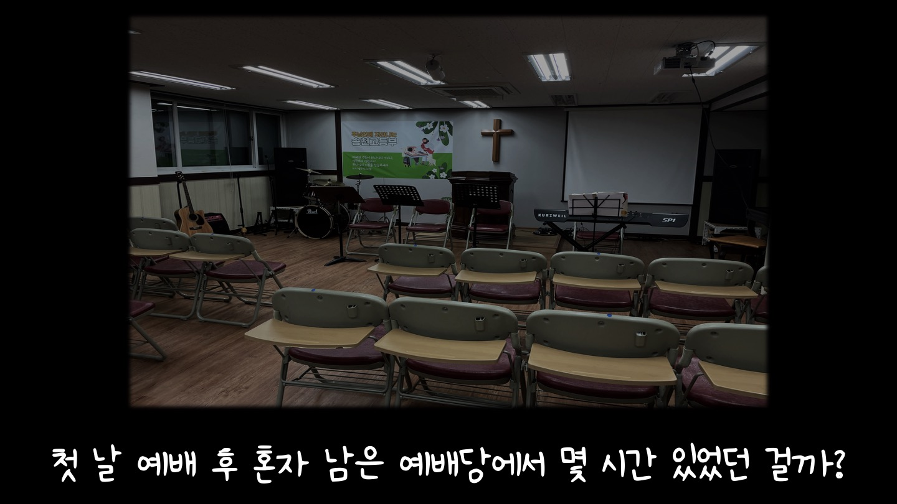
일주일을 꼬박 쏟은 설교에 졸고 외면하는 아이들을 보며, 마치 단단한 시멘트 벽을 대하는 것 같아 눈물을 쏟았습니다.
"하나님, 저같이 부족한 사람에게 이러시는 거 안 아까우세요?"
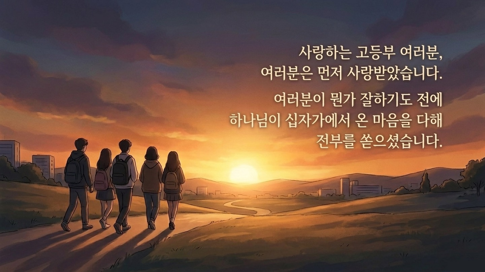
나를 위해 목숨마저 아낌없이 낭비하신 그 사랑이 있기에, 매주 나를 녹여내는 설교 준비 시간은 하나도 아깝지 않습니다.
그리고 차갑던 시멘트 벽 같던 아이들의 마음은, 던지는 사랑을 포근하게 흡수하는 스펀지처럼 변해갔습니다.
💬 이번 주 가족 식탁 질문
"오늘 모세의 고백처럼, 내 삶에서 하나님이 '먼저' 베풀어주신 사랑과 은혜는 무엇인가요? 그리고 내 공부방이나 학교 교실 등 일상에서 하나님의 사랑을 온 마음과 힘을 다해 표현(반사)해보고 싶은 방법은 무엇인지 나누어봅시다."
🙏 부모님의 축복 기도
"하나님, 우리 아이가 모세와 같이 하나님의 '먼저 찾아오신 사랑'을 깊이 알고 누리게 하옵소서. 세상의 다른 가짜 가치에 마음을 빼앗기지 않고, 온 마음과 온 정성과 온 힘을 다해 여호와 하나님만을 사랑하게 하옵소서. 하나님이 우리 아이에게 쏟으신 십자가 사랑의 낭비가 헛되지 않도록, 일상에서 그 사랑을 듬뿍 반사하는 복된 삶이 되게 하옵소서. 예수님의 이름으로 기도합니다. 아멘."
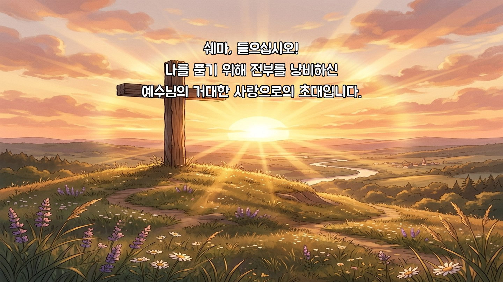
온 마음과 정성과 힘을 다하라는 그 명령은
우리를 옭아매는 종교적 짐이 아닙니다.
나를 품기 위해 십자가에서 전부를 낭비하신
예수님의 거대한 사랑으로의 초대입니다.